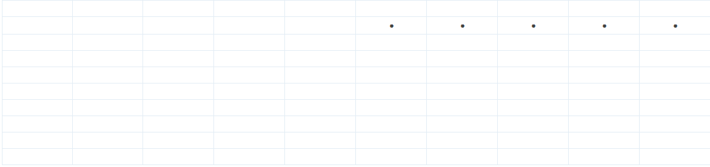
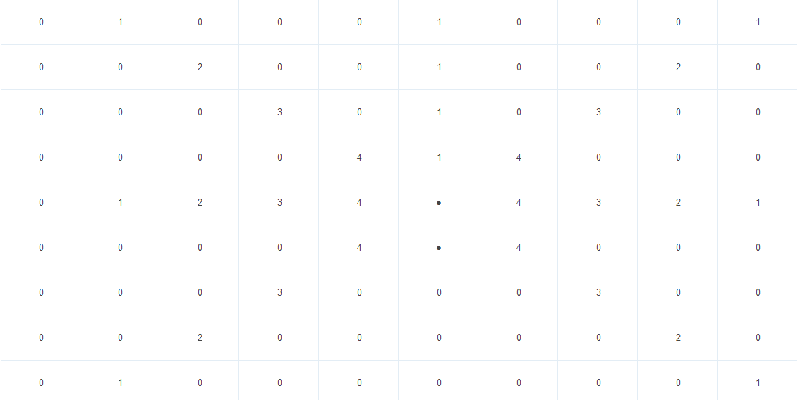
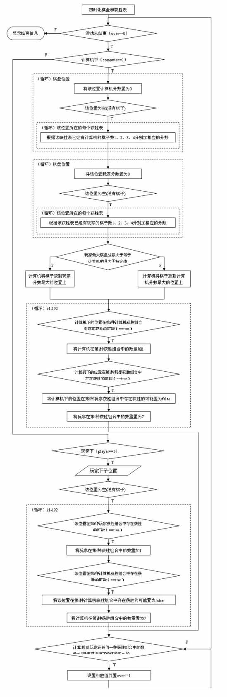

五子棋算法分析【算法1】
五子棋是一种受大众广泛喜爱的游戏，其规则简单，变化多端，非常富有趣味性和消遣性。其算法其实并不复杂，这里梳理了下网上的资料，提供两种算法的分析和讲解，望希望进入游戏开发的同学能有所感悟。
算法1
这里讲述棋盘大小为10×10的人机对战五子棋实现方法
1.概述
玩家每走一步，对于玩家和计算机，都根据获胜表对棋盘各个空棋位进行评分，每个位置的分数与下面这句话有关：该位置所在的每一种获胜组合中已经拥有的棋子数，然后对玩家和计算机产生的分数均衡，以判断计算机是进攻还是防守。
2.数据结构
10×10的数据，用来记录棋盘状态；
两个获胜表（[10][10][192]），也就是获胜组合，因为五个子一线则胜，不在一线上的五个子就不在一个组合中，对于10×10的棋盘获胜的组合有192种，下面将会详细说明，获胜表用来表示棋盘上的每个位置是否在玩家或计算机的获胜组合中；
一个二维数组（[2][192]），记录玩家与计算机在各种获胜组合中填入了多少棋子；
两个10×10的数组，用来记录玩家与计算机在各个棋盘位置上的分数，分数高的将是计算机下一步的着法。
3. 计算获胜组合

上图是一个10×10的五子棋棋盘，我们可以得出垂直方向上的获胜组合是10×6=60，同理，水平方向的获胜组合也是60，而两个倾斜方向上的获胜组合是(1+2+3+4+5)×2+6=36，即：
60*2+36*2=192。
4.评分
用两个数组存储每个棋位的分数，一个是计算机的，另一个是玩家的，表示该位置对于各方是最佳着法的肯定程度，对一个位置的评分就是：遍历该位置所在的每一种获胜组合，根据这个组合中已经拥有的己方棋子数1到4分别加不同分数，最后将这些所有的获胜组合所得出的分数相加就是该位置的分数，下图是对于黑方各棋位的评分（其中的1，2，3，4这几个值要根据实际需要来确定）。

5.思路
